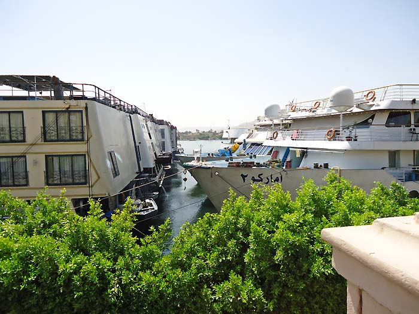
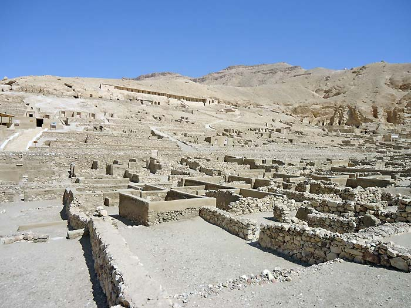
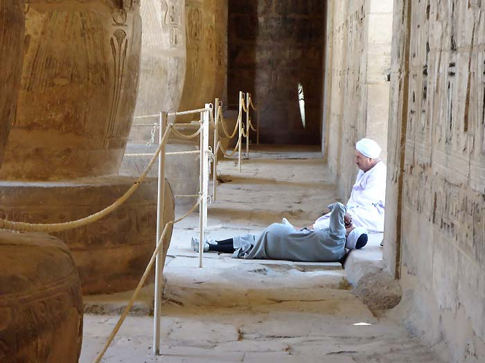
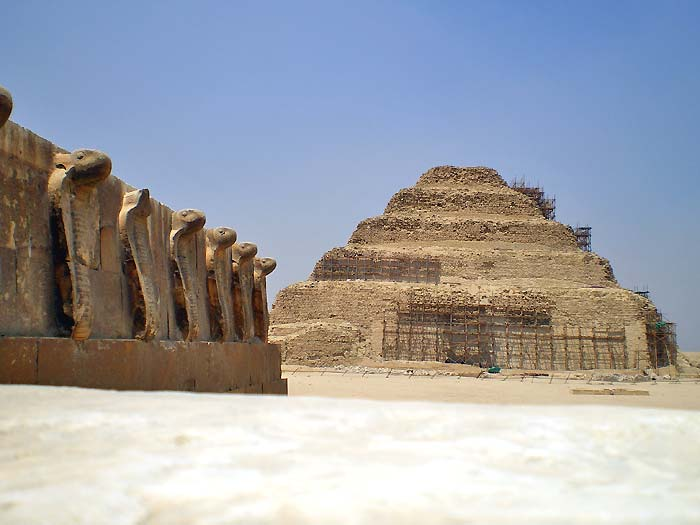

The lack of tourism in Egypt, and the effect on the Egyptian People
I have just returned from another trip to Luxor and for those who haven’t been to Egypt since the uprising, I thought I would give you an insight as to the effect this uprising has had on tourism, and the knock-on effect on the Egyptian people.
As we know, the Egyptian people fought for a cause they believed in, and won. For the first time that they can remember they have a freedom they never had before, but of course there is a price to pay, and for the Egyptian people this price is the fall in tourism. So why is tourism so bad? Maybe the incidents being reported by the media are making people afraid to go. All was quiet when I was in Cairo, and I would only assume that the demonstrations there are certainly no worse than the student (and other) demonstrations we have recently witnessed in London and in George Square in Glasgow.
Despite the hardship that this fall in tourism has caused, the Egyptian people are happy - still laughing and joking with one another, and optimistic that in the fullness of time tourists will return and things will get back to normal. When asked if the hardship that the uprising has caused has been worth it, the answer was a unanimous 'yes'. 'Why?' I asked. 'Because we are free' was always the reply.

It is sad to see the cruise ships lying idle on the Nile in Luxor. The crews have been laid off with no hope of a return to work until there is an upturn in the demand for cruises, and they start operating again. Ninety per cent of the shops on the Corniche are shuttered and closed, because naturally without tourists there is no business. The owners of the few shops that are open live in the hope that just one customer will come in and buy something. The story is the same in the Souk.

In the Karnak Temple car park, rather than the usual 50 or more tour coaches, the most I saw on my visits to the Temple was two. Fantastic if you want to have the Temple to yourself, but not so good for a country that depends on tourism. Luxor Temple was much the same, and in the three or so hours that we spent in Deir el Medina we were the only two people there. My friend and I shared the Temple of Medinet Habu with one other person apart from the guardians (and most of them were asleep – what else is there for them to do?).

This fall in tourism isn’t just applicable to Luxor. When I went to Saqqara we were lucky if we saw a dozen people in the entire complex. No matter what tombs or mastabas we went into, we were often the only people there. As I said before, this was great for us but not so good for the Egyptian economy or in turn, the people. We couldn’t believe our luck when we had the tombs of Maya and Horemheb to ourselves, but maybe this should not be too surprising as these tombs have only recently opened to the public.

We travelled from Luxor to Cairo, across to Saqqara, on to Alexandria, then to Hurghada before returning to Luxor, and we never saw any trouble at all, nor did we at any time feel in danger. I just felt the same happy, laid back, safe Egyptian atmosphere.
I am in total agreement with what Dr Bill Manley said at the ES meeting held in the Burrell recently. If you want to go to Egypt just go. It is as safe now as it ever was before the revolution.
© Kate Gingell 2011
Unless otherwise indicated, © Nigel Strudwick 1994-2016